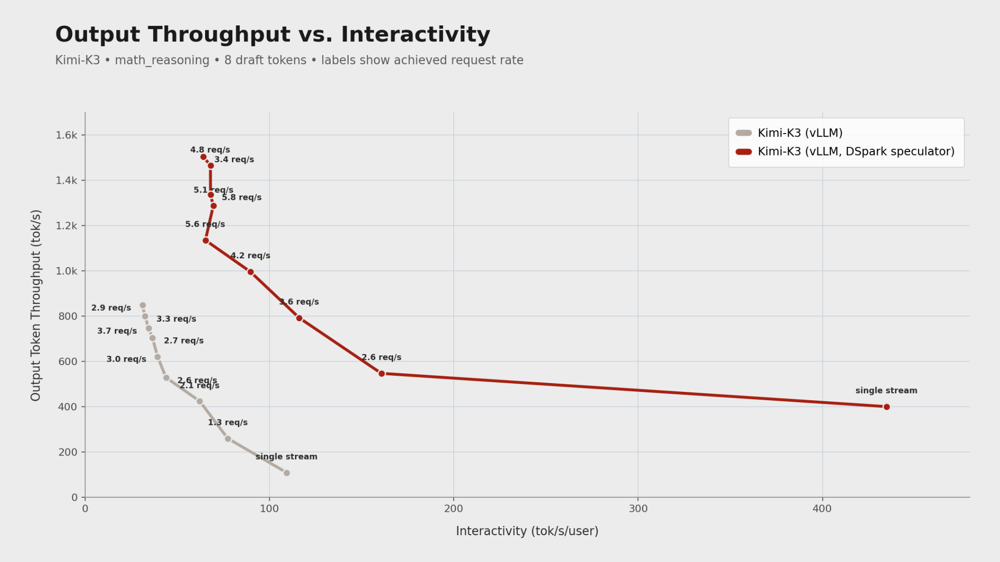
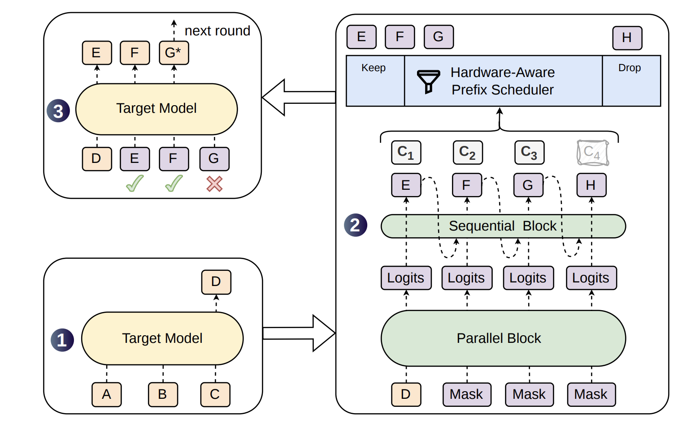
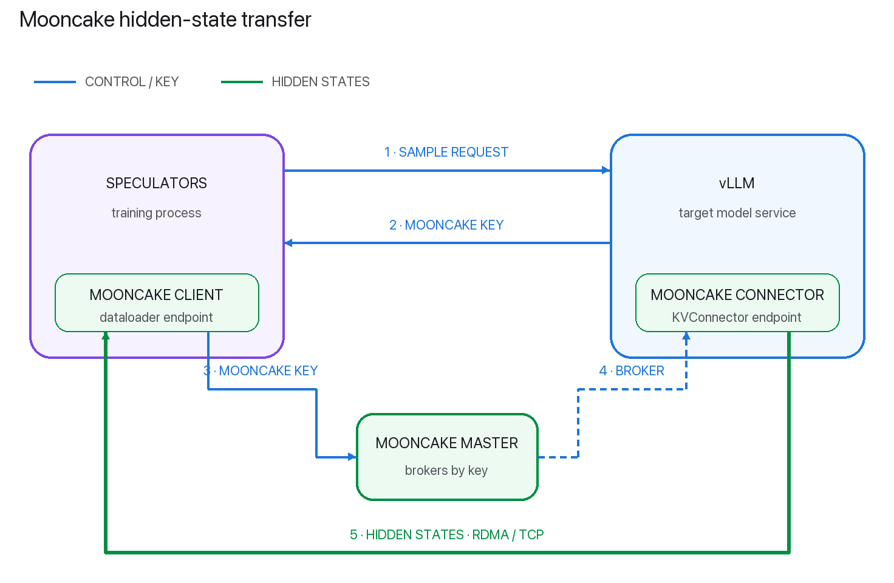
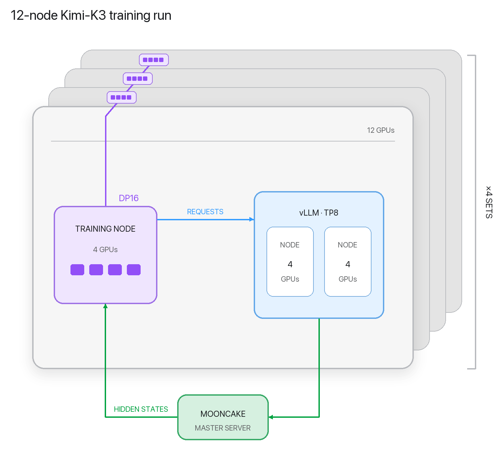

六月，DeepSeek发布了DSpark，这是对DFlash块级投机解码算法的一次扩展。新算法承诺更强的token间连贯性，因此能拿到更长的接受长度。但对开源社区来说，真正的问题永远是同一个：它能不能被训练、被打包、被部署，而且不需要一个博士生全程守着checkpoint？
靠着vLLM项目的Speculators训练库，答案是响亮的「能」。用Speculators可以按标准、Hugging Face兼容的格式轻松训练、打包、部署DSpark草稿模型，vLLM能直接加载。这套实现已经在Qwen3.6-35B-A3B、Gemma-4-31B-it、GLM-5.2等模型上验证过。我们把训练库扩展到了Kimi K3这个2.8万亿参数的前沿模型。新的DSpark speculator在数学推理任务上把单流交互性从约110提升到约435 tok/s/用户，并在并发负载下、相同交互性水平上带来最高约3.5倍的输出吞吐。

大语言模型每做一次前向传播只生成一个token。投机解码让一个轻量草稿模型先提出若干token，再由完整的目标模型一次性验证，以此加速这个过程。
EAGLE-3是一个很强的基线，但它仍然是自回归草稿：提出七个token就要走七步顺序草稿。DFlash改为在一次非因果骨干传播中预测整个块，报告的加速比EAGLE-3高出2.5倍以上。
代价在于并行位置之间无法互相作为条件。对「Thank you!」这样的提示，模型可能在第1位上同时看好「Of」和「No」、在下一位置上同时看好「course」和「problem」，于是拼出「Of problem」这种错配。而验证会在第一个被拒绝的token处停止，一个错误就会让剩下的后缀一起作废，DSpark论文把这个问题称作后缀衰减（suffix decay）。
DSpark保留了DFlash的并行骨干，同时加入两个轻量组件：
● Markov logit-bias头顺序采样token，并用上一个被选中的token调整每个位置的logits。它的低秩转移矩阵无需再做一次transformer传播，就恢复了重要的局部依赖。
● 置信头估计每个token会被接受的概率。一个硬件感知的调度器依据这些估计值来决策：负载轻时验证更长的前缀，系统繁忙时剪掉不太可能被接受的后缀。
因此DSpark通过继承单次骨干传播，保住了并行草稿的主要优势，同时找回了自回归生成的几分连贯性。在Qwen3系列目标模型上，它报告的接受序列比DFlash长16% 到18%、比EAGLE-3长27% 到31%。在DeepSeek-V4的生产服务中，相同吞吐下每个用户的生成速度比此前的MTP-1基线提升了60% 到85%。

DSpark的半自回归设计只有在额外的顺序开销仍远小于再做一次草稿模型前向传播时，才能改善推理性能。开源的Kimi K3 DSpark speculator使用一个5层、50亿参数的草稿模型，每个解码步提出8个token。
在九个评测域上，它的宏平均接受长度为每轮验证4.11个token。结构化任务上表现最强：数学推理6.42个token，HumanEval 4.96个，翻译4.65个。在请求数较低时，加速尤其明显。
这个模型对长上下文提示格外好用。在LongBench-v2这类有挑战的领域数据集上，我们的Kimi K3 DSpark在37.8万token的提示上做到每个解码迭代最多5.31个输出token。即使放到更宽的工作负载上，排名前10% 的请求也达到了每次迭代至少3.76个token，说明在真正长的上下文下依然能维持很深的投机运行。
随着并发请求增加，它也能有效扩展。并发从1提到16，聚合输出吞吐从每秒177个token提到683个。
更关键的是，负载之下响应起步依然很快。尽管并发请求数变成16倍，首token时间中位数只增加了100毫秒，从379毫秒升到479毫秒。
部署很简单，按官方vLLM recipe针对你的硬件和用例配置即可：
docker run --gpus all \
--privileged --ipc=host -p 8000:8000 \
-v ~/.cache/huggingface:/root/.cache/huggingface \
-e GLOO_SOCKET_IFNAME=$IFACE_NAME \
-e NCCL_SOCKET_IFNAME=$IFACE_NAME \
-e VLLM_ALLREDUCE_USE_FLASHINFER=1 \
-e VLLM_ENGINE_READY_TIMEOUT_S=3600 \
-e VLLM_USE_V2_MODEL_RUNNER=1 \
-e VLLM_USE_RUST_FRONTEND=1 \
vllm/vllm-openai:latest moonshotai/Kimi-K3 \
--trust-remote-code \
--gpu-memory-utilization 0.95 \
--tensor-parallel-size 16 \
--nnodes 2 \
--node-rank 0 \
--master-addr $HEAD_IP \
--load-format fastsafetensors \
--no-enable-flashinfer-autotune \
--max-model-len 1048576 \
--kv-cache-dtype fp8 \
--attention-config '{"use_prefill_query_quantization":true,"mla_prefill_backend":"TOKENSPEED_MLA"}' \
--enable-prefix-caching \
--attention-backend TOKENSPEED_MLA \
--prefix-match-unit 128 \
--reasoning-parser kimi_k3 \
--language-model-only \
--speculative-config '{"model":"RedHatAI/Kimi-K3-speculator.dspark", "num_speculative_tokens":8, "method":"dspark", "draft_sample_method":"probabilistic", "rejection_sample_method":"block"}'这个模型是在Verda慷慨提供的GB300机柜上训练的。Verda是一家欧洲AI云厂商，从数据中心到托管服务端到端自持整套技术栈，并且100% 使用可再生能源。Verda是欧洲最早部署GB300 NVL72机柜的服务商之一，其内部AI Lab也在同一批机柜上做推理研究。
这台GB300机柜保持NVIDIA参考设计，裸金属运行、不做虚拟化，操作系统是Ubuntu 24.04.4 LTS，跑在NVIDIA的64K页内核6.14上。
Verda把优化精力集中在最要紧的系统级配置上，让研究者能拿到前沿级的环境。系统使用NVIDIA 610.57.04开源内核GPU驱动（R610）；除CUDA 13.1和12.9之外还装了CUDA 13.4.0 Developer Preview，NCCL 2.31.2在系统范围内可用。
选CUDA 13.4.0是因为它带来了新的Blackwell编程特性，也因为它是最早包含Rubin支持（sm_107）的工具链。这能保证今天在GB300上编写、剖析的代码，可以面向下一代硬件构建而不出现意外的兼容问题。基于硬件计数器的GPU剖析也无需root权限即可使用，每位研究者都能对训练和推理负载做剖析。
我们一直在与Verda合作，帮助开源训练与推理基础设施跟上最新的GPU架构，当前重点是从GB300到VR200的机柜级系统。很高兴看到这次合作的成果逐渐成形。
投机解码的草稿模型虽然小，却很有威力，原因之一是它们通常把目标模型的隐状态作为输入来指导预测。这极大改善了它们的工作上下文，也让草稿模型能够把预测紧密对齐到目标模型。
需要注意的是，训练这些草稿模型需要一份数据集，其中既有隐状态输入，也有目标模型的log概率输出。好在vLLM有一套隐状态提取系统，可以按需为数据集样本取出目标模型的内部隐状态。这套系统使用一个哑草稿模型，复用vLLM的草稿模型管线接收目标隐状态，并把它们插入一个哑注意力层的KV cache。之后，实现KVConnector接口的类就能把隐状态取出并传出vLLM。目前vLLM自带一个ExampleHiddenStatesConnector做的正是这件事：把隐状态异步写入磁盘。
这套系统在单节点的「vLLM加训练」配置下工作得很好。例如把节点上一半GPU用于训练，另一半用vLLM服务目标模型并按需提取隐状态。这套系统在Speculators和vLLM里已经稳定支持了好几个月。但面对Kimi K3这样的2.8万亿参数模型，即使权重做了4 bit量化，最先进的加速器也开始撞上显存上限。我们需要一套能超出单节点训练、支持训练与隐状态提取解耦的系统。

带着这些要求，我们做了MooncakeHiddenStatesConnector，它以Mooncake传输引擎为后端，在进程之间、跨节点流式传输隐状态。新系统用一个Mooncake主代理进程管理与vLLM以及注册为客户端各训练实例之间的通信。配置完成后，训练进程可以向vLLM前端发请求，并在响应里拿到一个Mooncake store key。这个key再交给Mooncake master，由它撮合一次从vLLM引擎到Speculators dataloader的传输。整个过程由Mooncake服务端自动管理，传输方式取决于配置：可以用高速RDMA，也可以用普通TCP，在相同或不同节点的进程之间传数据。
有了新的MooncakeHiddenStatesConnector，我们就有了一套能扩展到大规模、多节点训练的系统。即使把Kimi K3量化到4 bit，这个模型至少仍需要两个GB300节点（每节点四块GPU）来服务。我们试验了不同的训练与vLLM配置，发现三节点一组（两个做推理、一个做训练）能给出最好的吞吐。带Mooncake connector的Speculators还有一个好处：独立扩大或缩小任一组件都非常容易，方便拿到最佳性能。

DSpark论文：https://arxiv.org/abs/2607.05147
EAGLE-3论文：https://arxiv.org/abs/2503.01840
DFlash论文：https://arxiv.org/abs/2602.06036
Speculators训练库：https://github.com/vllm-project/speculators
Kimi K3 DSpark speculator模型：https://huggingface.co/RedHatAI/Kimi-K3-speculator.dspark
Qwen3.6-35B-A3B speculator模型：https://huggingface.co/RedHatAI/Qwen3.6-35B-A3B-speculator.dspark
Gemma-4-31B-it speculator模型：https://huggingface.co/RedHatAI/gemma-4-31B-it-speculator.dspark
GLM-5.2 speculator模型：https://huggingface.co/RedHatAI/GLM-5.2-speculator.dspark
Kimi K3的vLLM部署recipe：https://recipes.vllm.ai/moonshotai/Kimi-K3
vLLM社区Slack：https://slack.vllm.ai/
参考：https://vllm.ai/blog/2026-09-15-kimi-k3-dspark